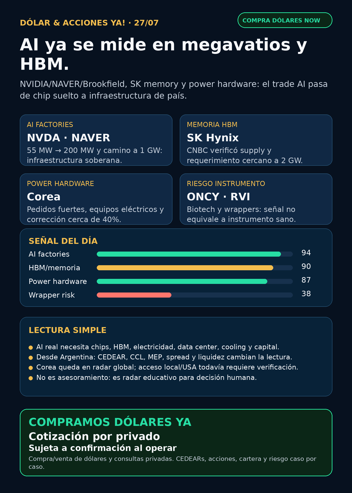

AI ya se mide en megavatios, HBM y red eléctrica.
NVIDIA/NAVER/Brookfield, SK/HBM y power hardware de Corea refuerzan el segundo peaje de AI: electricidad física y capital.
Texto WhatsApp
Placa del día

Dólar & Acciones YA — Stock Radar — 27/07
Fecha de edición: 2026-07-27. Research educativo para Argentina. No es recomendación personalizada de compra ni de venta.
Lectura simple del día
La señal fuerte de hoy es que la inteligencia artificial dejó de ser sólo una historia de chips. Ahora se está convirtiendo en infraestructura de país: data centers de cientos de megavatios, memoria HBM, financiamiento tipo infraestructura, electricidad física, distribución eléctrica, cooling y permisos.
En criollo: una GPU no trabaja sola. Para que AI funcione hacen falta memoria rápida, CPUs, redes, data centers, transformadores, tableros eléctricos, breakers, agua/cooling y capital que aguante obras gigantes. Por eso el radar de hoy mira NVDA, HBM, Brookfield, power hardware de Corea, utilities/power equipment, energía argentina y también los riesgos de instrumentos débiles como biotech chica o wrappers privados.
Esto está ordenado por valor educativo/señal de radar. No es orden de compra. Buena empresa ≠ buen precio de entrada ≠ buen instrumento para Argentina ≠ buen tamaño dentro de una cartera.
Capa Argentina: dólar, CEDEARs e instrumento
BlueLytics: oficial vendedor ARS 1.519 y blue vendedor ARS 1.545; update 2026-07-27 08:45 -03. CriptoYa: blue ask ARS 1.545, USDT ask ARS 1.598,90, MEP AL30 ARS 1.532,78 (2026-07-24 16:59 -03) y CCL AL30 ARS 1.622,15 (2026-07-24 16:59 -03).
Para operar de verdad se confirma en broker vivo: MEP/CCL pueden venir con timestamp de cierre previo, CEDEAR tiene ratio, spread, liquidez y comisiones, y una acción global no es automáticamente el mismo riesgo que su vehículo local.
Tesis central
La AI trade se está moviendo de “comprar el chip ganador” a entender el sistema completo: AI factories soberanas, megavatios, HBM, power hardware, financiación y riesgo instrumental.
NVDAsigue siendo núcleo del stack, pero la señal nueva habla de país, electricidad, memoria y partners.- NAVER/NVIDIA/Brookfield empujan AI factory de 55 MW a 200 MW hacia 2028, con camino a 1 GW.
- NVIDIA/SK Group refuerza el cuello HBM/memoria y el requerimiento de power cercano a 2 GW reportado por CNBC.
- Corea confirma que el segundo peaje no son sólo transformadores grandes: también distribution boards, medium/low-voltage transformers y gas circuit breakers.
TGSdeja recibo de energía argentina;ONCYyRVIson recordatorios de que una narrativa puede ser interesante pero el instrumento puede estar débil.
Señales educativas del día
1. AI factories soberanas — NVIDIA / NAVER / Brookfield / SK Group
- Qué pasó: NVIDIA Newsroom publicó el 24/07 que NAVER, NVIDIA y Brookfield planean expandir la AI factory nacional de NAVER de 55 MW a 200 MW hacia 2028, con camino a 1 GW. NVIDIA planea invertir USD 1.000 millones en NAVER y Brookfield firmó term sheet no vinculante por hasta USD 9.000 millones. También anunció con SK Group planes de partnership por más de USD 500.000 millones para AI infrastructure y next-generation memory.
- Fuente primaria: NVIDIA Newsroom: https://nvidianews.nvidia.com/news/latest y release NAVER/NVIDIA/Brookfield: https://nvidianews.nvidia.com/news/naver-nvidia-and-brookfield-to-expand-koreas-national-ai-factory-infrastructure-buildout
- Fuente secundaria verificada: CNBC sobre SK Hynix/HBM y requerimientos de power: https://www.cnbc.com/2026/07/25/nvidia-locks-down-memory-from-sk-hynix-as-part-of-500-billion-ai-deal.html
- Lectura en criollo: AI factory ya se parece más a infraestructura eléctrica/industrial que a software puro. El moat no es sólo “modelo”; es energía, memoria, diseño de sistema, financing y operación.
- Accionable internacional/global:
NVDA, Brookfield (BAM/BNsegún vehículo), SK Hynix vía Corea/ADR/OTC y otros proxies de infraestructura. Requiere precio, liquidez, valuación y riesgo país/moneda. - Accionable local Argentina:
NVDA/AVGOsuelen tener vías CEDEAR a verificar en broker; Brookfield/Corea pueden no ser directos o tener liquidez limitada. No asumir disponibilidad. - Estado: señal fortalecida / vigilar ejecución, financiamiento final, power availability y supply HBM.
2. Power hardware Corea — LS Electric / HD Hyundai Electric / Hyosung
- Qué pasó: Chosunbiz reportó el 27/07 que Hyosung Heavy Industries, HD Hyundai Electric y LS Electric corrigieron cerca de 40% desde máximos, pero al mismo tiempo LS Electric mostró Q2 con revenue +32,2% interanual, operating profit +64,3%, orders +243% y suba de guidance de órdenes anuales a 6–6,5 billones de won. La demanda se expande a distribution boards, medium/low-voltage transformers y GCBs para data centers AI en Estados Unidos.
- Fuente sectorial verificada: https://biz.chosun.com/en/en-finance/2026/07/27/TDDW67IC45EHDCR24JYL2MPHOI/
- Lectura en criollo: el segundo peaje de AI es electricidad física. Pero no se limita al “transformador enorme”: hay tableros, breakers, distribución, power quality y equipos que pueden tener lead times largos.
- Accionable internacional/global: radar para
010120.KS,267260.KS,298040.KSy proxies más accesibles comoGEV, Siemens Energy (ENR.DE), Hitachi/OTC,ETN,HUBB,PWR,VRT. - Accionable local Argentina: no accionable directo sin verificar broker, liquidez, spread, moneda, ADR/OTC o CEDEAR. Puede ser proxy local imperfecto vía energéticas/infraestructura, pero no es la misma exposición.
- Riesgo: timing. Una tesis buena puede caer 40% antes de estabilizar. No perseguir FOMO.
- Estado: fortalece tesis con riesgo de valuación/timing.
3. Energía Argentina — TGS y el contexto de riesgo país
- Qué pasó: TGS informó en 6-K del 24/07 que Moody’s subió el rating de las notes de la compañía de
B2aB1, siguiendo el upgrade soberano argentino. - Fuente primaria SEC: https://www.sec.gov/Archives/edgar/data/931427/000093142726000009/tgs.htm
- Lectura en criollo: no es un descubrimiento operativo como un yacimiento nuevo ni una tarifa; es mejora de contexto de crédito. Para energía argentina suma, pero no alcanza solo para una decisión de inversión.
- Accionable local Argentina:
TGSU2/instrumento local o ADRTGSsegún broker; falta precio, spread, volumen, CCL implícito, comisiones y objetivo. - Estado: fortalece contexto / vigilar.
YPF,PAM/PAMP,VISTyCEPUrevisadas sin primaria fresca superior hoy.
4. Biotech high-risk — Oncolytics (ONCY)
- Qué pasó: Oncolytics informó en 8-K que recibió notice de Nasdaq porque la acción cerró debajo de USD 1 durante 30 ruedas consecutivas. No tiene efecto inmediato; tiene hasta el 19/01/2027 para recuperar cumplimiento, normalmente cerrando por encima de USD 1 durante al menos 10 ruedas consecutivas.
- Fuente primaria SEC: https://www.sec.gov/Archives/edgar/data/1129928/000112992826000047/oncy-20260720.htm
- Lectura en criollo: biotech puede tener ciencia interesante y al mismo tiempo ser un instrumento frágil. Fast Track, estudio clínico o hype no eliminan riesgo de listado, dilución o caja.
- Accionable: global high-risk. Para Argentina, no accionable local directo sin confirmar acceso/liquidez y sin aceptar riesgo binario.
- Estado: debilita instrumento / vigilar.
5. Private wrappers — Robinhood Ventures Fund I (RVI)
- Qué pasó: Form 4 del 24/07 muestra ventas del sponsor Robinhood Markets en
RVI: 28.431 acciones, proceeds aproximados USD 764.846, VWAP aproximado USD 26,90, remaining shares 13.181.275. - Fuente primaria SEC XML: https://www.sec.gov/Archives/edgar/data/2085091/000178387926000101/wk-form4_1784928110.xml
- Lectura en criollo: un wrapper privado no es acceso limpio a SpaceX, OpenAI, Anthropic o Databricks. Antes hay que mirar NAV, premium/descuento, holdings reales, sponsor sales, float, restricciones, liquidez y acceso desde Argentina/USA.
- Estado: debilita calidad instrumental / vigilar riesgo. No es oportunidad por sí mismo.
Watchlist priorizada de hoy
- NVDA: señal fuerte por AI factories soberanas, HBM y megavatios. Fortalece tesis estructural, no elimina riesgo de valuación.
- AVGO: sigue como proxy de custom silicon/networking; aparece como pieza del stack AI, no como accesorio menor. Sin filing nuevo superior hoy.
- TSM / ASML / MU: moat estructural vigente.
TSM6-K de month-end no trae capex/catalyst nuevo; no convertir filing neutro en señal. - GOOGL/GOOG: tesis de cloud/data centers vigente por demanda de AI factories; sin filing nuevo en esta corrida.
- RKLB: secundarias sobre Space Force/deals siguen audit-only; sin primaria Rocket Lab/DoD/SEC nueva superior.
- PLTR / AAPL / HOOD / TSLA: revisados sin señal primaria nueva fuerte.
HOODentra indirectamente porRVIy por carril fintech/AI agents ya indexado. - ASML: High-NA/AI demand vigente; sin señal primaria nueva. Regla: ASML sí como moat, all-in no.
- Gold / GLD / GOLD / B: instrumento ambiguo. No reportar precio ni tesis hasta saber si es ETF oro, Barrick, Berkshire B u otro activo.
- RVI: sponsor sales verificadas; riesgo de wrapper.
- SNDK / CBRS: sin señal nueva superior; Cerebras sigue radar alto por OpenAI/AWS/customer concentration.
Energía y power hardware
- AI power: NAVER/NVIDIA/Brookfield lleva el lenguaje a 55 MW → 200 MW → 1 GW. Esto conecta semis con generación, transmisión, dedicated power y financiamiento.
- Power hardware / transformadores: LS Electric, HD Hyundai Electric, Hyosung, Hitachi Energy, Siemens Energy, GE Vernova, Eaton, Hubbell, Quanta/PWR y Vertiv quedan en radar. Corea mostró señal diaria; para ejecución local falta acceso.
- Utilities/generation:
NEE/Dsiguen relevantes por filings recientes: Energy Resources backlog cerca de 35,1 GW, Duane Arnold nuclear camino a Q1 2029 y tesis data-center/power demand. Sin material nuevo adicional hoy. - Cooling:
MODsigue como candidato fuera de watchlist porque separó Data Centers como segmento operativo y mostró ventas FY2026 de USD 1.108,2 millones. - Argentina energía:
TGSrating B2→B1 verificado;YPF,PAM/PAMP,VIST,CEPUrevisadas sin primaria fresca superior. - Nuclear/uranio:
CEG,VST,CCJ, SMR revisados sin primaria nueva superior.
Pharma / salud
- GLP-1:
NVOvsLLYsigue como guerra comercial/regulatoria por marketing, dosis y market share. BioPharma Dive fue discovery; para headline fuerte falta court filing o comunicado primario en esta corrida. - Oncology/regulatory: J&J, RVMD y AZN aparecieron en BioPharma Dive como discovery; quedan para auditar con fuentes primarias antes de elevar.
- ONCY: señal primaria negativa por Nasdaq notice. Sirve como recordatorio de riesgo biotech.
- MRK / PFE / AZN / NVO / LLY / JNJ: revisados; sin primary fresca superior adicional.
Radar amplio fuera de watchlist
- Defensa / guerra física:
AVAV, GE Aerospace,RTX,LMT,NOC,GD,HWM,KTOS,BA,ITA/XARrevisados.AVAVsigue en radar por señales previas, pero no apareció primaria DoD/AVAV/SEC nueva superior. Estado: revisado sin señal nueva fuerte. - Space / orbital AI:
RKLB,SPCX/SpaceX, Starlink/Starship y wrappers privados revisados. Sin filing nuevo material verificado; titulares secundarios quedan audit-only. - Autonomous mobility / physical AI: Tesla, Waymo/Alphabet, Uber, Zoox/Amazon y Joby revisados. Sin primaria regulatoria o partnership nuevo usable hoy.
- Crypto gobernado / rails: Robinhood Chain/Stock Tokens/Agentic Accounts siguen como educación de infraestructura y agentes; sin analytics primaria/disclosure oficial nuevo. No hay token trade.
- Mercado amplio: commodities, bancos/fintech, REITs/data centers e industriales revisados; no superaron la señal AI factories + power hardware.
Private markets / instrumentos empaquetados
RVI: sponsor sales verificadas; requiere NAV, premium/descuento, holdings, liquidez y acceso.DXYZ: sin NPORT/fact sheet nuevo verificado; mantener educación, no oportunidad.SPCX/ SpaceX: sin filing material nuevo. No hablar de lockup/stake/valuation sin SEC.- ARKVX / AGIX / XOVR / VCX / FAPMI / Forge: revisados sin fuente primaria nueva usable.
Red flags / hype para ignorar
- “AI = sólo NVIDIA”: no. NVIDIA es núcleo, pero el sistema incluye HBM, electricidad, data centers, cooling, networking y financiación.
- “Power hardware corrigió 40%, entonces está barato”: no necesariamente. Primero valuación, márgenes, backlog, ciclo y liquidez.
- “Biotech con Fast Track = segura”: no.
ONCYmuestra riesgo de listing y caja. - “RVI/DXYZ/SPCX = SpaceX/OpenAI barato”: incompleto sin NAV, premium, holdings, restricciones y volumen.
- “RKLB contrato confirmado por titulares”: no hasta fuente primaria DoD/Rocket Lab/SEC.
- “Gold/GLD/GOLD/B”: bloqueado hasta confirmar instrumento exacto.
Qué mirar después
1. Confirmación final y ejecución de NVIDIA/NAVER/Brookfield: power path, financiamiento, calendario y supply HBM.
2. Earnings/filings de GEV, power hardware, cooling y utilities para ver si megawatts se transforman en margen.
3. Acceso real Argentina/USA para Corea power hardware y proxies más líquidos.
4. Fuente primaria para GLP-1/oncology antes de usar pharma como headline fuerte.
5. NAV/premium/descuento y sponsor sales de RVI/DXYZ antes de hablar de wrappers privados.
6. CEDEARs, CCL, MEP, spread y liquidez si Charly quiere convertir una tesis en cartera.
Portfolio/base Mi Simulación
La cartera de Ricardo fue liquidada, devuelta y terminada según estado vigente del 24/06. No hay acciones compradas ni P&L activo que reportar. Esta sección queda como vigilancia para una próxima compra o nuevo inversor, no como rendimiento de cartera real.
Recibo visible de cobertura
Revisado: watchlist base, AI infra/semis, energéticas argentinas, transformadores/power hardware, pharma/GLP-1/oncology, defensa/aeroespacial, space/private wrappers, autonomía/physical AI, fintech/AI agents, crypto gobernado y mercado amplio. Si un carril no aparece arriba, fue porque no tuvo señal primaria nueva más fuerte.
Servicio privado
Dólar · Acciones · Consulta privada. Si querés comprar o vender dólares, entender CEDEARs, armar una cartera o revisar riesgo, se ve por privado caso por caso. Cotización de dólares sujeta a confirmación al momento de operar.
Disclaimer
Esto es research educativo para decisión humana. No es asesoramiento financiero personalizado ni instrucción de compra/venta.